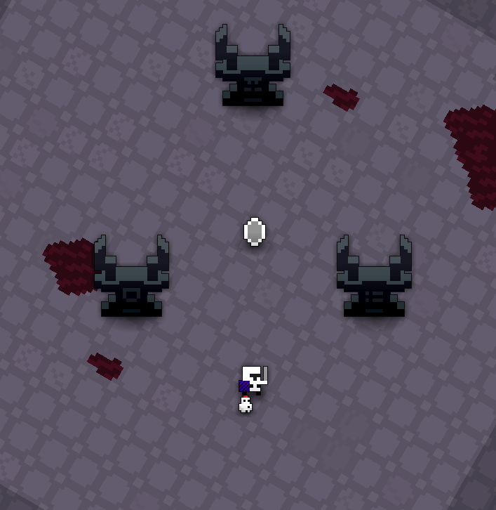
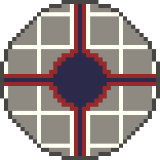
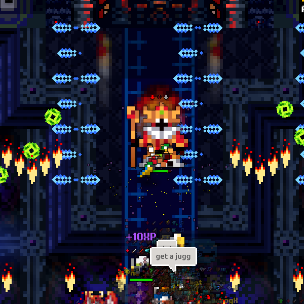
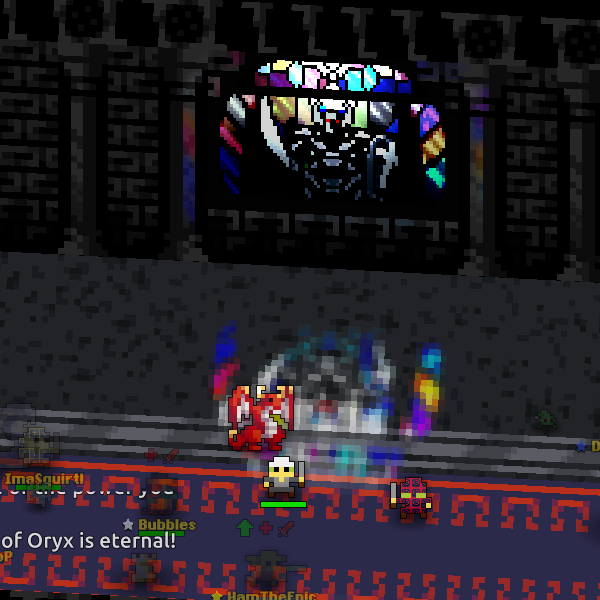
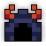

| Dust Drops
|
|---|

60-66 |

63-69 |

98-106 |
Oryx’s Sanctuary is an endgame dungeon designed to be the most challenging content in the game, surpassing even endgame dungeons such as the Lost Halls and The Shatters. This dungeon is one of the Exaltation dungeons, boosting Life, and notably has a 50% chance to grant an additional Exaltation.
The Sanctuary is accessible after defeating Oryx the Mad God 2 in the Wine Cellar; all three Oryx Runes must be used to unlock the portal, although the runes will be returned to the respective players if not all three are present. However, there is a small chance that one or more of the runes will be already active upon defeating Oryx 2, which includes an extremely small chance that all three will activate and the portal will open by itself upon a Wine Cellar clear.
The animation for unlocking Oryx’s Sanctuary:

The dungeon is the only source of T7 abilities, while being one of two sources of T14 armors and T14 weapons; it also drops a large number of incredibly powerful UT items (20) divided among five themed sets, Shaman Necromancer Set Shard, Mad Minotaur Set Shard, Astral Arcanist Set Shard and is the sole drop location of the Angelic Bard Set.
This dungeon must be completed to earn ‘Travel of the Decade‘, ‘Hero of the Nexus’ and ‘Realm of the Mad God’ fame bonuses.
| The Realm Eye says: |
|
For as much as Oryx values his own wine cellar, he recognizes the filthy mess it has become after years of invasions and reckless partying.
To satisfy his ego, he demanded a new chamber of his castle that he claimed would be more befitting of his splendor.
That private sanctuary, built into the cliffside of the Mad God’s castle island, is where Oryx retreats in his rare moments of sobriety to scheme with his most sinister allies.
|
Guide
The Oryx’s Sanctuary Guide is currently a work in progress.
Contents
Layout
The dungeon has a fixed layout consisting of four wings. All players will spawn in one randomly chosen wing in each instance of the dungeon, with the spawn room containing a destructible chest that contains a large amount of Health Potions and Magic Potions. Each wing is themed after a particular boss that will be fought before encountering Oryx the Mad God 3 at the center of the dungeon. Players cannot enter other wings and fight the other bosses aside from the one initially assigned. The early parts of the dungeon consist primarily of dark blue floors and brick wall tiles with columns, arches, and ornate green windows that distort light. Each wing contains unique decorative objects throughout, and the later parts have unique wing-specific tilesets. There are also banners and colored carpet specific to each wing.
Players must completely clear three sequential rooms of enemies before confronting the “miniboss” of the wing. Each room has its own fixed formation of enemies, and the number of enemies in the three rooms is consistent regardless of wing (6/12/16 for each room, respectively, for a total of 34 enemies). After the boss is defeated, players will traverse a long hallway with no enemies before the final battle with Oryx 3. The exit to each room is initially blocked with a large spiked gate. The gate will disappear and allow access to the next room once all enemies in the current room are defeated.
North Wing
- Governed by Chancellor Dammah and is color-coded red.
- Dammah’s area is themed after a government building. It contains intricate, dark gray to black large diamond floor tiles, dark blue carpet with Dammah’s “D” insigna, and high walls with Dammah’s signature red banners, antelope skull decorations, purple flame torches, and large ornate windows. Large tables containing various paper documents also serve as obstacles. The papers will also be scattered throughout the ground.
- Unlike his cohorts, Dammah’s boss room is simply a large square chamber with no decorations of note.
- Enemies:
- Room 1: Oryx Minister x3, Oryx Ambassador x2, Oryx Judge x1
- Room 2: Oryx Minister x2, Oryx Ambassador x2, Oryx Judge x2, Oryx Major x1, Oryx Officer x1, Oryx Deacon x1, Oryx Cardinal x1, Oryx Patrician x1, Oryx Aristocrat x1
- Room 3: Oryx Minister x3, Oryx Ambassador x3, Oryx Judge x4, Oryx Noble x1, Oryx Aristocrat x1, Oryx Sergeant x1, Oryx Deacon x1, Oryx Cleric x1, Oryx Cardinal x1
East Wing
- Governed by Treasurer Gemsbok and is color-coded yellow.
- Gemsbok’s area is themed after a treasure vault. It contains light gray floor tiles and red and blue carpet, along with the usual dark blue carpet with Gemsbok’s “G” insigna and his signature yellow banners. Scattered throughout are various “pedestals” formed by intricate golden tiles and containing colored gemstone tiles or decorative treasure objects. The high walls consist of ornate, light gray columns with golden flair.
- Gemsbok’s arena is a large square room decorated similarly to the rest of the wing, with red-and-blue carpets and piles of treasure adorning the corners of the chamber. Four golden platforms inset with gems are present on the cardinal sides of the arena, which indicate Gemsbok’s teleportation locations during the battle.
- Enemies:
- Room 1: Oryx Noble x3, Oryx Aristocrat x2, Oryx Patrician x1
- Room 2: Oryx Noble x2, Oryx Aristocrat x4, Oryx Patrician x3, Oryx Sergeant x1, Oryx Minister x1, Oryx Major x1
- Room 3: Oryx Noble x6, Oryx Aristocrat x2, Oryx Patrician x3, Oryx Cardinal x1, Oryx Deacon x1, Oryx Officer x1, Oryx Ambassador x1, Oryx Cleric x1
South Wing
- Governed by Archbishop Leucoryx and is color-coded blue.
- Leucoryx’s area is themed after a cathedral. It consists of large, dark blue, square floor tiles each with an intricate pattern, along with dark blue carpet with Leucoryx’s “L” insigna and his signature blue banners. Decorative torture/execution devices (guillotines, iron maidens, pillories, racks, breaking wheels) and skeletons, sometimes hanging from chains, are scattered throughout. The edges of Leucoryx’s room are decorated with candelabra. The walls mostly consist of dark blue skull piles.
- Leucoryx’s arena is a large, rectangular, church-like room whose walls are initially decorated with orange, light-distorting stained windows with a sun motif. After Leucoryx transforms into his Chaos form, the stained glass will become light blue and purple. The central wall will now have a stained glass design consisting of a blue circle surrounded by purple and yellow crescent moon shapes, representing Leucoryx’s light and dark forms.
- Enemies:
- Room 1: Oryx Deacon x3, Oryx Cleric x2, Oryx Cardinal x1
- Room 2: Oryx Deacon x4, Oryx Cleric x3, Oryx Cardinal x2, Oryx Aristocrat x1, Oryx Ambassador x1, Oryx Major x1
- Room 3: Oryx Deacon x5, Oryx Cleric x4, Oryx Cardinal x1, Oryx Sergeant x2, Oryx Judge x2, Oryx Patrician x2
West Wing
- Governed by Chief Beisa and is color-coded green.
- Beisa’s area is themed after a military training ground. The floors contain plain, often cracked gray stone tiles, along with dark blue carpet with Beisa’s “B” insigna and his signature green banners. Decorative training dummies, archery targets with arrows, weapons on display stands, and suits of armor designed for his three minion types are present.
- Beisa’s arena contains gray to dark blue tiles which form a geometric pattern designed as a 3x3 grid. The edges of the boss room will become an impassable void once the fight with Beisa starts, leaving only the central 3x3 grid. The high walls consist of dark gray stone bricks, green torches, and columns surrounding large statues. Chains can also be seen hanging from the ceiling.
- Enemies:
- Room 1: Oryx Officer x2, Oryx Sergeant x2, Oryx Major x2
- Room 2: Oryx Officer x2, Oryx Sergeant x2, Oryx Major x3, Oryx Minister x1, Oryx Ambassador x1, Oryx Deacon x1, Oryx Cleric x1, Oryx Aristocrat x1
- Room 3: Oryx Officer x5, Oryx Sergeant x5, Oryx Major x2, Oryx Minister x1, Oryx Deacon x1, Oryx Patrician x1, Oryx Cardinal x1
Central Chamber
- Oryx the Mad God 3 awaits in this chamber.
- Oryx’s room and the preceding long hallways contain dark blue carpet with his red “Ω” insigna and Oryx-themed banners. The hallway walls contain intricate, stained glass windows depicting Oryx the Mad God which distort light. The floor tiles are similar to the ones in the early parts of the dungeon but are dark gray to black instead of dark blue. Once Oryx turns into his Exalted form, the floor tiles will brighten significantly, becoming gray to white. At the end of the battle, the floor of the arena will be destroyed, transforming into a starry void with various planets floating within.

Back to top
Screenshots

 
Enemies
Enemies in the dungeon are sorted into groups, each associated with one particular miniboss/wing and appearing in greater numbers in their respective wing, although enemies can be found outside their respective wings as well.
Every standard enemy within the Sanctuary gives an extremely large amount of XP on death - 1,500 XP base XP, translating to 0.75 fame without any XP bonuses. Combined with the high fame rates on the bosses (75k/200k base XP for the minibosses/Oryx, translating to 37.5/100 fame without an XP bonus), the Sanctuary is capable of providing players with a huge amount of fame as a byproduct; a fully completed Sanctuary will always award 326,000 XP (163 Fame) before factoring in XP bonuses.
Dammah Minions
Gemsbok Minions
Leucoryx Minions
Beisa Minions
Boss Servants
(Note: boss servants that cannot be attacked and only serve as extensions of their parent boss’ attacks will have all relevant information listed on the respective page.)
Minibosses
Final Boss
Back to top
Drops of Interest
Item |
Drops From |
|
|
Oryx Ambassador, Oryx Minister, Oryx Judge, Oryx Noble,  Oryx Aristocrat Oryx Aristocrat, Oryx Patrician, Oryx Deacon, Oryx Cleric, Oryx Cardinal, Oryx Officer, Oryx Sergeant, Oryx Major
|
|
|
|
|
|
|
|
|
|
|
|
|
|
|
|
|
|
|
|
|
|
|
|
|
|
|
|
|
|
|
|
|
|
|
|
|
|
|
|
|
|
|
|
|
|
Back to top
Tips and Strategies
When clearing, the enemies can be sorted into several categories based on their immunities. Knowing which enemies are vulnerable to which statuses can help dealing with them.
- Immune to Stasis: All
- Immune to Stun, vulnerable to Paralyze: Ambassador, Noble, Deacon, Officer
- Immune to Paralyze, vulnerable to Stun: Minister, Aristocrat, Cleric, Sergeant
- Immune to Paralyze and Stun: Judge, Patrician, Cardinal, Major
Back to top
History
Before Exalt Version 1.3.1.0 (Jan 2021), this dungeon was consistently accessible only through organized discord runs. However, now it is possible for the monuments to activate by themselves, as well as the runes being common enough for the sanctuary to “randomly” open, though it is fairly uncommon.
Before Exalt Version 5.11.0.0 (May 2025), dungeon completion gave 134-313 with 60% chance, 68-160 with 50% chance and 36-84 with 40% chance.
Before Exalt Version 5.12.0.0 (June 2025), dungeon completion gave 54-60 , 48-54 and 71-82 .
Back to top
Trivia
- The dungeon was the first to introduce the quadratic “Adaptive Scaling” model for enemy health scaling (see HP Scaling for details). Note: the formula is referred to as exponential in the patch notes but actually is a quadratic function.
- Oryx’s Sanctuary is currently the only dungeon with a 32x32 portal sprite, and was the first dungeon to have an animation for its opening. The screen also uniquely darkens when the portal is opened.
- There exists an 8x8 sprite for the Oryx’s Sanctuary portal that was used in older testing sessions, which is also used for when the dungeon is opened through unusual circumstances (ie. spawned on Public Testing). This sprite is also the one used to represent Oryx’s Sanctuary in the Exaltation UI.

- Each miniboss is named after different species of antelopes in the Oryx genus.
- Each miniboss represents one of the Seven Deadly Sins, with the remaining three being extended to the Messengers of Oryx, which represent Oryx. More details can be found in the individual enemy pages.
- Chancellor Dammah - Sloth
- Treasurer Gemsbok - Greed
- Archbishop Leucoryx - Lust
- Chief Beisa - Gluttony
- Messengers of Oryx and Oryx the Mad God - Wrath, Pride, Envy
Back to top
 Teleportation Disabled
Teleportation Disabled Music: Apostasy
Music: Apostasy


{kind=link}
{kind=link}
{kind=link}
{kind=link}